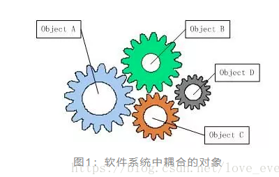
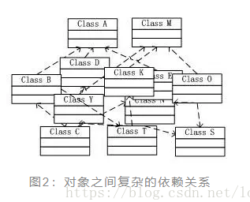
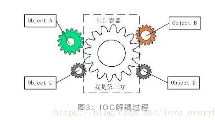
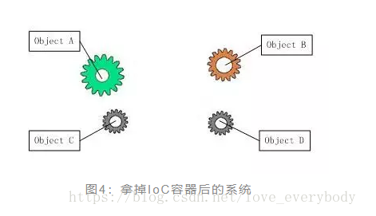
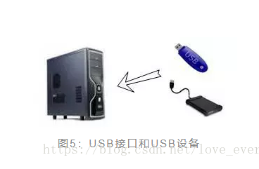

本文两篇文章转自：
Spring IoC 有什么好处: https://blog.csdn.net/xuefeiliuyuxiu/article/details/79181540
Spring 的 IOC 原理 (通俗易懂): https://blog.csdn.net/love_everybody/article/details/79836136
# 个人理解
控制反转：在没有使用 spring 的时候，比如在我们需要用一个对象 A 的时候，我们就需要通过 new A () 来使用，假如说 A 类依赖 B 类，B 类依赖 C 类，如果依赖关系如下图所示
class A { | |
public B b; | |
public A() { | |
b = new B(); | |
} | |
public void print(){ | |
b.print(); | |
} | |
} | |
class B { | |
public C c; | |
public B() { | |
c = new C(); | |
} | |
public void print(){ | |
c.print(); | |
} | |
} | |
class C { | |
public int i; | |
public C() { | |
this.i = 10; | |
} | |
public void print(){ | |
System.out.println(i); | |
} | |
} | |
public class SpringIocTest { | |
public static void main(String[] args) { | |
// 使用 B 获取数字 | |
A a = new A(); | |
a.print(); | |
} | |
} |
在实际项目中对象之间有很多依赖关系，假如说我们就想通过 new A 来获取 C 的方法 print 方法来输出 i 的值，使用的时候通过上面类的关系 new A 调用 a 的 print 的方法即可，实际上就是在调用 C 的方法。但假如我们此时就要修改 C 类的构造方法，比如这个 i 的值是动态的，这个时候我们就需要把在 B 类中的 new C 类的代码修改，A 类中 new B 类的代码修改，如果是上百个类之间的依赖那么我们就得修改所有和 new C 类的有关系的类都要改。如下：
class A { | |
public B b; | |
// 修改 | |
public A(int i) { | |
b = new B(i); | |
} | |
public void print(){ | |
b.print(); | |
} | |
} | |
class B { | |
public C c; | |
// 修改 | |
public B(int i) { | |
c = new C(i); | |
} | |
public void print(){ | |
c.print(); | |
} | |
} | |
class C { | |
public int i; | |
// 修改 | |
public C(int i) { | |
this.i = i; | |
} | |
public void print(){ | |
System.out.println(i); | |
} | |
} | |
public class SpringIocTest { | |
public static void main(String[] args) { | |
// 使用 B 获取数字 | |
A a = new A(2); | |
a.print(); | |
} | |
} |
我们就需要改成上面的样子，但是为了消除上面的麻烦我们还可以这样修改类之间的关联关系，不要在类的内部过度依赖需要依赖的类，也就是不要在类中去 new 要用的类，修改代码如下：
class A { | |
public B b; | |
public A(B b) { | |
this.b = b; | |
} | |
public void print(){ | |
b.print(); | |
} | |
} | |
class B { | |
public C c; | |
public B(C c) { | |
this.c = c; | |
} | |
public void print(){ | |
c.print(); | |
} | |
} | |
class C { | |
public int i; | |
public C(int i) { | |
this.i = i; | |
} | |
public void print(){ | |
System.out.println(i); | |
} | |
} | |
// 这次我们就需要这么去 new A 了 | |
public class SpringIocTest { | |
public static void main(String[] args) { | |
int i = 10; | |
C c = new C(i); | |
B b = new B(c); | |
A a = new A(b); | |
a.print(); | |
} | |
} |
这样就算在修改再去修改 C 中的构造参数也不用去再去修改 B 类 A 类了，这就类似依赖注入通过构造参数来就行注入，但是我们看到了，如果要是很多类的话，那么在使用的 A 类的时候就需要知道如果 new B,C,D... 类才行，而且代码显得臃肿。
这个时候 spring 就来了，它能帮我们管理在使用 A 的时候不需要去写那么多 new 的类，更不需要去关心如何去 new ，只需要编写好配置文件，添加依赖注入注解即可。
上述是自己的见解，写的比较啰嗦，表达的也不是很清晰，下面是转载的两篇通俗易懂的 ioc 原理介绍
# Spring IoC 有什么好处
作者：Mingqi
链接：https://www.zhihu.com/question/23277575/answer/169698662
来源：知乎
著作权归作者所有。商业转载请联系作者获得授权，非商业转载请注明出处。
要了解控制反转 (Inversion of Control), 我觉得有必要先了解软件设计的一个重要思想：依赖倒置原则（Dependency Inversion Principle ）。


** 什么是依赖倒置原则？** 假设我们设计一辆汽车：先设计轮子，然后根据轮子大小设计底盘，接着根据底盘设计车身，最后根据车身设计好整个汽车。这里就出现了一个 “依赖” 关系：汽车依赖车身，车身依赖底盘，底盘依赖轮子。


这样的设计看起来没问题，但是可维护性却很低。假设设计完工之后，上司却突然说根据市场需求的变动，要我们把车子的轮子设计都改大一码。这下我们就蛋疼了：因为我们是根据轮子的尺寸设计的底盘，轮子的尺寸一改，底盘的设计就得修改；同样因为我们是根据底盘设计的车身，那么车身也得改，同理汽车设计也得改 —— 整个设计几乎都得改！
我们现在换一种思路。我们先设计汽车的大概样子，然后根据汽车的样子来设计车身，根据车身来设计底盘，最后根据底盘来设计轮子。这时候，依赖关系就倒置过来了：轮子依赖底盘， 底盘依赖车身， 车身依赖汽车。


这时候，上司再说要改动轮子的设计，我们就只需要改动轮子的设计，而不需要动底盘，车身，汽车的设计了。
这就是依赖倒置原则 —— 把原本的高层建筑依赖底层建筑 “倒置” 过来，变成底层建筑依赖高层建筑。高层建筑决定需要什么，底层去实现这样的需求，但是高层并不用管底层是怎么实现的。这样就不会出现前面的 “牵一发动全身” 的情况。


控制反转（Inversion of Control） 就是依赖倒置原则的一种代码设计的思路。具体采用的方法就是所谓的依赖注入（Dependency Injection）。其实这些概念初次接触都会感到云里雾里的。说穿了，这几种概念的关系大概如下：


为了理解这几个概念，我们还是用上面汽车的例子。只不过这次换成代码。我们先定义四个 Class，车，车身，底盘，轮胎。然后初始化这辆车，最后跑这辆车。代码结构如下：


这样，就相当于上面第一个例子，上层建筑依赖下层建筑 —— 每一个类的构造函数都直接调用了底层代码的构造函数。假设我们需要改动一下轮胎（Tire）类，把它的尺寸变成动态的，而不是一直都是 30。我们需要这样改：


由于我们修改了轮胎的定义，为了让整个程序正常运行，我们需要做以下改动：


由此我们可以看到，仅仅是为了修改轮胎的构造函数，这种设计却需要修改整个上层所有类的构造函数！在软件工程中，这样的设计几乎是不可维护的 —— 在实际工程项目中，有的类可能会是几千个类的底层，如果每次修改这个类，我们都要修改所有以它作为依赖的类，那软件的维护成本就太高了。
所以我们需要进行控制反转（IoC），及上层控制下层，而不是下层控制着上层。我们用依赖注入（Dependency Injection）这种方式来实现控制反转。所谓依赖注入，就是把底层类作为参数传入上层类，实现上层类对下层类的 “控制”。这里我们用构造方法传递的依赖注入方式重新写车类的定义：


这里我们再把轮胎尺寸变成动态的，同样为了让整个系统顺利运行，我们需要做如下修改：


看到没？这里 ** 我只需要修改轮胎类就行了，不用修改其他任何上层类。这显然是更容易维护的代码。不仅如此，在实际的工程中，这种设计模式还有利于不同组的协同合作和单元测试：** 比如开发这四个类的分别是四个不同的组，那么只要定义好了接口，四个不同的组可以同时进行开发而不相互受限制；而对于单元测试，如果我们要写 Car 类的单元测试，就只需要 Mock 一下 Framework 类传入 Car 就行了，而不用把 Framework, Bottom, Tire 全部 new 一遍再来构造 Car。
这里我们是采用的构造函数传入的方式进行的依赖注入。其实还有另外两种方法：Setter 传递和接口传递。这里就不多讲了，核心思路都是一样的，都是为了实现控制反转。


看到这里你应该能理解什么控制反转和依赖注入了。那什么是 ** 控制反转容器 (IoC Container)** 呢？其实上面的例子中，对车类进行初始化的那段代码发生的地方，就是控制反转容器。


显然你也应该观察到了，因为采用了依赖注入，在初始化的过程中就不可避免的会写大量的 new。这里 IoC 容器就解决了这个问题。这个容器可以自动对你的代码进行初始化，你只需要维护一个 Configuration（可以是 xml 可以是一段代码），而不用每次初始化一辆车都要亲手去写那一大段初始化的代码。这是引入 IoC Container 的第一个好处。
IoC Container 的第二个好处是：** 我们在创建实例的时候不需要了解其中的细节。** 在上面的例子中，我们自己手动创建一个车 instance 时候，是从底层往上层 new 的：


这个过程中，我们需要了解整个 Car/Framework/Bottom/Tire 类构造函数是怎么定义的，才能一步一步 new / 注入。
而 IoC Container 在进行这个工作的时候是反过来的，它先从最上层开始往下找依赖关系，到达最底层之后再往上一步一步 new（有点像深度优先遍历）：


这里 IoC Container 可以直接隐藏具体的创建实例的细节，在我们来看它就像一个工厂：


我们就像是工厂的客户。我们只需要向工厂请求一个 Car 实例，然后它就给我们按照 Config 创建了一个 Car 实例。我们完全不用管这个 Car 实例是怎么一步一步被创建出来。
实际项目中，有的 Service Class 可能是十年前写的，有几百个类作为它的底层。假设我们新写的一个 API 需要实例化这个 Service，我们总不可能回头去搞清楚这几百个类的构造函数吧？IoC Container 的这个特性就很完美的解决了这类问题 —— 因为这个架构要求你在写 class 的时候需要写相应的 Config 文件，所以你要初始化很久以前的 Service 类的时候，前人都已经写好了 Config 文件，你直接在需要用的地方注入这个 Service 就可以了。这大大增加了项目的可维护性且降低了开发难度。
这里只是很粗略的讲了一下我自己对 IoC 和 DI 的理解。主要的目的是在于最大限度避免晦涩难懂的专业词汇，用尽量简洁，通俗，直观的例子来解释这些概念。如果让大家能有一个类似 “哦！原来就是这么个玩意嘛！” 的印象，我觉得就 OK 了。想要深入了解的话，可以上网查阅一些更权威的资料。这里推荐一下 Dependency injection 和 Inversion of Control Containers and the Dependency Injection pattern 这两篇文章，讲的很好很详细。
# Spring 的 IOC 原理 (通俗易懂)
# 1. IoC 理论的背景
我们都知道，在采用面向对象方法设计的软件系统中，它的底层实现都是由 Ñ 个对象组成的，所有的对象通过彼此的合作，最终实现系统的业务逻辑。

如果我们打开机械式手表的后盖，就会看到与上面类似的情形，各个齿轮分别带动时针，分针和秒针顺时针旋转，从而在表盘上产生正确的时间。图 1 中描述的就是这样的一个齿轮组，它拥有多个独立的齿轮，这些齿轮相互啮合在一起，协同工作，共同完成某项任务。我们可以看到，在这样的齿轮组中，如果有一个齿轮出了问题，就可能会影响到整个齿轮组的正常运转。
齿轮组中齿轮之间的啮合关系，与软件系统中对象之间的耦合关系非常相似。对象之间的耦合关系是无法避免的，也是必要的，这是协同工作的基础。现在，伴随着工业级应用的规模越来越庞大，对象之间的依赖关系也越来越复杂，经常会出现对象之间的多重依赖性关系，因此，架构师和设计师对于系统的分析和设计，将面临更大的挑战。对象之间耦合度过高的系统，必然会出现牵一发而动全身的情形。

耦合关系不仅会出现在对象与对象之间，也会出现在软件系统的各模块之间，以及软件系统和硬件系统之间。如何降低系统之间，模块之间和对象之间的耦合度，是软件工程永远追求的目标之一。为了解决对象之间的耦合度过高的问题，软件专家 Michael Mattson 提出了 IOC 理论，用来实现对象之间的 “解耦”，目前这个理论已经被成功地应用到实践当中，很多的 J2EE 项目均采用了国际奥委会框架产品 Spring。
# 2. 什么是控制反转（IoC）
IOC是Inversion of Control的缩写，多数书籍翻译成“控制反转”，还有些书籍翻译成为“控制反向”或者“控制倒置”。
1996年，Michael Mattson在一篇有关探讨面向对象框架的文章中，首先提出了IOC这个概念。对于面向对象设计及编程的基本思想，前面我们已经讲了很多了，不再赘述，简单来说就是把复杂系统分解成相互作用合作的对象，这些对象类通过封装以后，内部实现对外部是透明的，从而降低了解决问题的复杂度，而且可以灵活地被重用和扩展.IOC理论提出的观点大体是这样的：借助于“第三方”实现具有依赖关系的对象之间的，如下图：

大家看到了吧，由于引进了中间位置的 “第三方”，也就是 IOC 容器，使得 A，B，C，d 这 4 个对象没有了耦合关系，齿轮之间的传动全部依靠 “第三方” 了，全部对象的控制权全部上缴给 “第三方” IOC 容器，所以，IOC 容器成了整个系统的关键核心，它起到了一种类似 “粘合剂” 的作用，把系统中的所有对象粘合在一起发挥作用，如果没有这个 “粘合剂”，对象与对象之间会彼此失去联系，这就是有人把 IOC 容器比喻成 “粘合剂” 的由来。
我们再来做个试验：把上图中间的 IOC 容器拿掉，然后再来看看这套系统：

我们现在看到的画面，就是我们要实现整个系统所需要完成的全部内容。这时候，A，B，C，d 这 4 个对象之间已经没有了耦合关系，彼此毫无联系，这样的话，当你在实现阿的时候，根本无须再去考虑 B，C 和 d 了，对象之间的依赖关系已经降低到了最低程度。所以，如果真能实现 IOC 容器，对于系统开发而言，这将是一件多么美好的事情，参与开发的每一成员只要实现自己的类就可以了，跟别人没有任何关系！
我们再来看看，控制反转（IOC）到底为什么要起这么个名字我们来对比一下？
软件系统在没有引入 IOC 容器之前，如图 1 所示，对象甲依赖于对象 B，那么对象阿在初始化或者运行到某一点的时候，自己必须主动去创建对象乙或者使用已经创建的对象 B. 无论是创建还是使用对象 B，控制权都在自己手上。
软件系统在引入 IOC 容器之后，这种情形就完全改变了，如图 3 所示，由于 IOC 容器的加入，对象甲与对象乙之间失去了直接联系，所以，当对象甲运行到需要对象乙的时候，IOC 容器会主动创建一个对象乙注入到对象甲需要的地方。
通过前后的对比，我们不难看出来：对象甲获得依赖对象乙的过程，由主动行为变为了被动行为，控制权颠倒过来了，这就是 “控制反转” 这个名称的由来。
# 3. IOC 的别名：依赖注入（DI）
2004年，Martin Fowler探讨了同一个问题，既然IOC是控制反转，那么到底是“哪些方面的控制被反转了呢？”，经过详细地分析和论证后，他得出了答案：“获得依赖对象的过程被反转了”控制被反转之后，获得依赖对象的过程由自身管理IOC容器主动注入于是，他给“控制反转“取了一个更合适的名字叫做”依赖注入（Dependency Injection）“。他的这个答案，实际上给出了实现IOC的方法：注入。所谓依赖注入，就是由IOC容器在运行期间，动态地将某种依赖关系注入到对象之中。
所以，依赖注入（DI）和控制反转（IOC）是从不同的角度的描述的同一件事情，指就是通过引入 IOC 容器，利用依赖关系注入的方式，实现对象之间的解耦。
我们举一个生活中的例子，来帮助理解依赖注入的过程。大家对 USB 接口和 USB 设备应该都很熟悉吧，USB 为我们使用电脑提供了很大的方便，现在有很多的外部设备都支持 USB 接口。

现在，我们利用电脑主机和 USB 接口来实现一个任务：从外部 USB 设备读取一个文件。
电脑主机读取文件的时候，它一点也不会关心 USB 接口上连接的是什么外部设备，而且它确实也无须知道。它的任务就是读取 USB 接口，挂接的外部设备只要符合 USB 接口标准即可。所以，如果我给电脑主机连接上一个 U 盘，那么主机就从 U 盘上读取文件；如果我给电脑主机连接上一个外置硬盘，那么电脑主机就从外置硬盘上读取文件。挂接外部设备的权力由我作主，即控制权归我，至于 USB 接口挂接的是什么设备，电脑主机是决定不了，它只能被动的接受。电脑主机需要外部设备的时候，根本不用它告诉我，我就会主动帮它挂上它想要的外部设备，你看我的服务是多么的到位。这就是我们生活中常见的一个依赖注入的例子。在这个过程中，我就起到了 IOC 容器的作用。
通过这个例子，依赖注入的思路已经非常清楚：当电脑主机读取文件的时候，我就把它所要依赖的外部设备，帮他挂接上。整个外部设备注入的过程和一个被依赖的对象在系统运行时被注入另外一个对象内部的过程完全一样。
我们把依赖注入应用到软件系统中，再来描述一下这个过程：
对象 A 依赖于对象 B, 当对象 A 需要用到对象 B 的时候，IOC 容器就会立即创建一个对象 B 送给对象 A。IOC 容器就是一个对象制造工厂，你需要什么，它会给你送去，你直接使用就行了，而再也不用去关心你所用的东西是如何制成的，也不用关心最后是怎么被销毁的，这一切全部由 IOC 容器包办。
在传统的实现中，由程序内部代码来控制组件之间的关系。我们经常使用 new 关键字来实现两个组件之间关系的组合，这种实现方式会造成组件之间耦合。IOC 很好地解决了该问题，它将实现组件间关系从程序内部提到外部容器，也就是说由容器在运行期将组件间的某种依赖关系动态注入组件中。
4. IOC 为我们带来了什么好处
我们还是从 USB 的例子说起，使用 USB 外部设备比使用内置硬盘，到底带来什么好处？
第一、USB 设备作为电脑主机的外部设备，在插入主机之前，与电脑主机没有任何的关系，只有被我们连接在一起之后，两者才发生联系，具有相关性。所以，无论两者中的任何一方出现什么的问题，都不会影响另一方的运行。这种特性体现在软件工程中，就是可维护性比较好，非常便于进行单元测试，便于调试程序和诊断故障。代码中的每一个 Class 都可以单独测试，彼此之间互不影响，只要保证自身的功能无误即可，这就是组件之间低耦合或者无耦合带来的好处。
第二、USB 设备和电脑主机的之间无关性，还带来了另外一个好处，生产 USB 设备的厂商和生产电脑主机的厂商完全可以是互不相干的人，各干各事，他们之间唯一需要遵守的就是 USB 接口标准。这种特性体现在软件开发过程中，好处可是太大了。每个开发团队的成员都只需要关心实现自身的业务逻辑，完全不用去关心其它的人工作进展，因为你的任务跟别人没有任何关系，你的任务可以单独测试，你的任务也不用依赖于别人的组件，再也不用扯不清责任了。所以，在一个大中型项目中，团队成员分工明确、责任明晰，很容易将一个大的任务划分为细小的任务，开发效率和产品质量必将得到大幅度的提高。
第三、同一个 USB 外部设备可以插接到任何支持 USB 的设备，可以插接到电脑主机，也可以插接到 DV 机，USB 外部设备可以被反复利用。在软件工程中，这种特性就是可复用性好，我们可以把具有普遍性的常用组件独立出来，反复利用到项目中的其它部分，或者是其它项目，当然这也是面向对象的基本特征。显然，IOC 不仅更好地贯彻了这个原则，提高了模块的可复用性。符合接口标准的实现，都可以插接到支持此标准的模块中。
第四、同 USB 外部设备一样，模块具有热插拔特性。IOC 生成对象的方式转为外置方式，也就是把对象生成放在配置文件里进行定义，这样，当我们更换一个实现子类将会变得很简单，只要修改配置文件就可以了，完全具有热插拨的特性。
以上几点好处，难道还不足以打动我们，让我们在项目开发过程中使用 IOC 框架吗？
5. IOC 容器的技术剖析
IOC 中最基本的技术就是 “反射 (Reflection)” 编程，目前.Net C#、Java 和 PHP5 等语言均支持，其中 PHP5 的技术书籍中，有时候也被翻译成 “映射”。有关反射的概念和用法，大家应该都很清楚，通俗来讲就是根据给出的类名（字符串方式）来动态地生成对象。这种编程方式可以让对象在生成时才决定到底是哪一种对象。反射的应用是很广泛的，很多的成熟的框架，比如象 Java 中的 Hibernate、Spring 框架，.Net 中 NHibernate、Spring.Net 框架都是把 “反射” 做为最基本的技术手段。
反射技术其实很早就出现了，但一直被忽略，没有被进一步的利用。当时的反射编程方式相对于正常的对象生成方式要慢至少得 10 倍。现在的反射技术经过改良优化，已经非常成熟，反射方式生成对象和通常对象生成方式，速度已经相差不大了，大约为 1-2 倍的差距。
我们可以把 IOC 容器的工作模式看做是工厂模式的升华，可以把 IOC 容器看作是一个工厂，这个工厂里要生产的对象都在配置文件中给出定义，然后利用编程语言的的反射编程，根据配置文件中给出的类名生成相应的对象。从实现来看，IOC 是把以前在工厂方法里写死的对象生成代码，改变为由配置文件来定义，也就是把工厂和对象生成这两者独立分隔开来，目的就是提高灵活性和可维护性。
6. IOC 容器的一些产品
Sun ONE 技术体系下的 IOC 容器有：轻量级的有 Spring、Guice、Pico Container、Avalon、HiveMind；重量级的有 EJB；不轻不重的有 JBoss，Jdon 等等。Spring 框架作为 Java 开发中 SSH (Struts、Spring、Hibernate) 三剑客之一，大中小项目中都有使用，非常成熟，应用广泛，EJB 在关键性的工业级项目中也被使用，比如某些电信业务。
.Net 技术体系下的 IOC 容器有：Spring.Net、Castle 等等。Spring.Net 是从 Java 的 Spring 移植过来的 IOC 容器，Castle 的 IOC 容器就是 Windsor 部分。它们均是轻量级的框架，比较成熟，其中 Spring.Net 已经被逐渐应用于各种项目中。
7. 使用 IOC 框架应该注意什么
使用 IOC 框架产品能够给我们的开发过程带来很大的好处，但是也要充分认识引入 IOC 框架的缺点，做到心中有数，杜绝滥用框架。
第一、软件系统中由于引入了第三方 IOC 容器，生成对象的步骤变得有些复杂，本来是两者之间的事情，又凭空多出一道手续，所以，我们在刚开始使用 IOC 框架的时候，会感觉系统变得不太直观。所以，引入了一个全新的框架，就会增加团队成员学习和认识的培训成本，并且在以后的运行维护中，还得让新加入者具备同样的知识体系。
第二、由于 IOC 容器生成对象是通过反射方式，在运行效率上有一定的损耗。如果你要追求运行效率的话，就必须对此进行权衡。
第三、具体到 IOC 框架产品 (比如：Spring) 来讲，需要进行大量的配制工作，比较繁琐，对于一些小的项目而言，客观上也可能加大一些工作成本。
第四、IOC 框架产品本身的成熟度需要进行评估，如果引入一个不成熟的 IOC 框架产品，那么会影响到整个项目，所以这也是一个隐性的风险。
我们大体可以得出这样的结论：一些工作量不大的项目或者产品，不太适合使用 IOC 框架产品。另外，如果团队成员的知识能力欠缺，对于 IOC 框架产品缺乏深入的理解，也不要贸然引入。最后，特别强调运行效率的项目或者产品，也不太适合引入 IOC 框架产品，象 WEB2.0 网站就是这种情况。
开始编写简单易懂的 java 思维导图啦，有兴趣的，可以关注我。
跳转地址：java 知识点 -- 通俗易懂（思维导图）